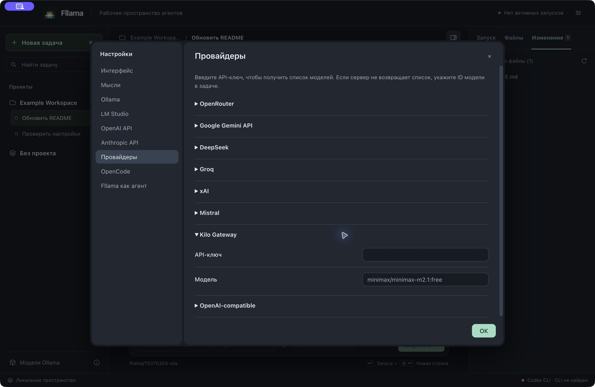
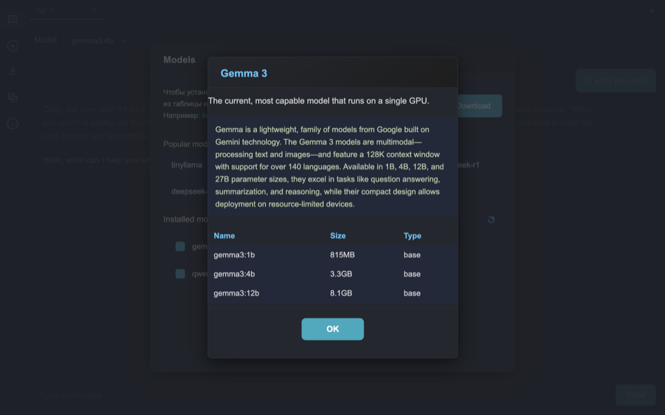

Open a project
Open the repository root to use worktrees. Choose an agent and a model, then describe the task. Use a scratchpad for a conversation without project files.
Run coding agents in separate Git worktrees, then switch tasks and inspect their changes in one workspace.
Screenshots of the Fllama 2.0 development build on macOS, using a sample project.



 Fllama
Fllama
Keep Cyrillic text intact when the stream splits a character.
The decoder preserves incomplete UTF-8 bytes between chunks.
src/providers.js
- buf += chunk.toString()
+ buf += decoder.write(chunk)Choose an installed coding agent or connect a model provider. Each task keeps its own selection.
Install and sign in to the CLI you want to use. OpenCode can also connect to a running server.
Start Ollama or the LM Studio local server. Fllama lists installed models and can download models from its Ollama catalog, including Qwen2.5 Coder.
Configure credentials in Settings. For another OpenAI-compatible server, enter its API base URL and a model ID when needed.
A Git worktree gives a task its own checkout from the current commit. Agents on separate worktrees can edit files at the same time.
Open the repository root to use worktrees. Choose an agent and a model, then describe the task. Use a scratchpad for a conversation without project files.
Worktree creates a new branch and checkout on the first run. Project folder works directly on the current files. Wait until the active run finishes before starting another task in the same folder.
Use Run to follow status and activity, Files to browse the checkout, and Changes to inspect the Git diff of a selected file.
Start a follow-up with the previous prompt and response. A worktree handoff uses the existing branch and checkout, so a second agent can review the first agent’s changes.
The linked v1.0.0 installers contain the Ollama chat. The screenshots above show the Fllama 2.0 development build.
Use Git and Node.js to run the version currently in the repository.
git clone https://github.com/ArduRadioKot/Fllama.git
cd Fllama/src
npm ci
npm start

Yes. Start Ollama or LM Studio and select an installed model. Cloud providers and hosted CLI backends can send the selected task’s context to their services.
They stay in the original checkout. A new worktree starts from the committed snapshot. Choose Project folder to work with the files already in that checkout.
Inspect the diff in Fllama, then merge the branch with Git when you are satisfied with the change.
Fllama removes the task and its conversation. Its Git worktree and branch remain on disk.
Local Ollama and LM Studio servers can run without a cloud API key. CLI agents use their own sign-in. Cloud providers generally need a key, with an option to select a model marked :free for Kilo Gateway.